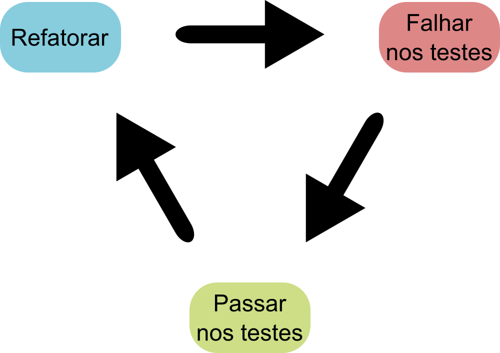
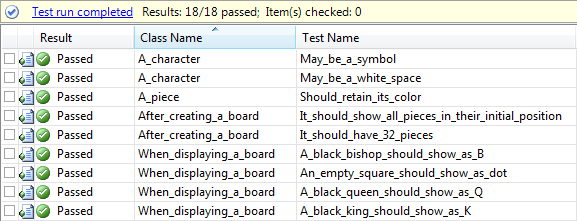

Testes
Centro de Apoio à Políticas de Governo
Slides por Vitor Machado
Motivação
-
Testes não resultam diretamente em um retorno de investimento (ROI), mas sim de custo X benefício do projeto:
- Utilização dos testes resulta em um aumento de qualidade e confiabilidade do software desenvolvido;
- Os testes podem ser vistos como um indicador palpável do quão robusto o sistema está.
Refatoramento
-
A existência de testes facilita a prática do refatoramento:
- Quando um refatoramento é realizado e todos os testes já existentes permanecem bem-sucedidos, pode-se acreditar com alto grau de confiabilidade que o refatoramento de fato não alterou nenhum comportamento externo da funcionalidade.

Testes como documentação
-
Testes podem ainda funcionar como uma documentação viva, que se mantém atualizada desde que os testes sejam mantidos em funcionamento:
- Indicam diretamente as funcionalidades do código e comportamentos esperados.

Testes unitários
-
São testes cujo foco está em uma única "unidade" de código:
- Visam testar as menores partes possíveis do código, englobando apenas uma funcionalidade por teste;
- Esses testes devem ser totalmente independentes de outras áreas do sistema, por tanto devem ser usados "mocks" e "stubs" (objetos simulados) para isolar um teste de outras partes do sistema.
- Normalmente são desenvolvidos pelos próprios desenvolvedores do sistema, muitas vezes antes de escrever o próprio código do sistema (método chamado de "test-driven development" ou TDD).
Testes de integração
-
São testes cujo foco está na interoperabilidade de dois ou mais módulos de funcionalidade do sistema:
- Diversas vezes unidades funcionam corretamente em isolamento, mas apresentam falhas quando utilizadas juntas;
- São desenvolvidos em quantidade menor que os testes unitários, e normalmente numa etapa posterior.
- Esses testes normalmente são desenvolvidos pelos próprios desenvolvedores assim como os testes unitários, e também podem ser utilizados com metodologia TDD.
Testes unitários - boas práticas
-
Testes consistem de asserções sobre resultados obtidos, comparando-os com resultados esperados:
- O ideal é que cada teste contenha apenas uma única asserção, ou o mínimo possível;
- Muitas asserções por teste dificultam a localização da causa da falha;
-
Testes unitários devem ser isolados do resto do sistema, para isso devem ser utilizados mocks ou stubs para simular o comportamento de outras partes do código:
- A ferramenta PowerMock (Java) possibilita a criação de mocks para qualquer método, incluindo métodos estáticos.
Testes unitários - métricas
-
A métrica mais comumente utilizada para testes unitários é a cobertura de código, facilitando a localização de partes não testadas do código:
- A ferramenta EclEmma (Eclipse) pode ser utilizada para ver a porcentagem de código coberta por testes.
Testes de integração - boas práticas
-
Os testes de integração cobrem múltiplas partes do sistema, e por isso não haverá o mesmo nível de isolamento:
- Ainda assim, partes do sistema fora do escopo do teste devem ser isoladas;
- São escritos em um nível mais alto e devem refletir de maneira ainda mais direta os requisitos de software.
Testes de integração - métricas
-
Assim como nos testes unitários a métrica mais comum é a cobertura de código.